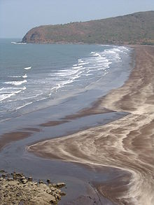

|  |
Harihareshwar :- Main artical:-Harihareshwar Histori :- Harihareshwar is a town in Raigad district, in Maharashtra, India. It is surrounded by four hills named after lords Harihareshwar, Harshinachal, Bramhadri and Pushpadri. The river Savitri enters the Arabian Sea from the town of Harihareshwar. Towards the north of the town is the temple of Lord Harihareshwar, said to have been blessed by Lord Vishnu. Hence Harihareshwar is often referred to as Dev-ghar or "house of God". Besides a major pilgrimage centre, Harihareshwar is a popular beach resort with two beaches, one to the north and the other to the south of the temple. Maharashtra Tourism Development Corporation has a resort on the south beach. Harihareshwar, along with Shrivardhan and Diveagar Beach forms a popular weekend beach destination from Pune and Mumbai. |